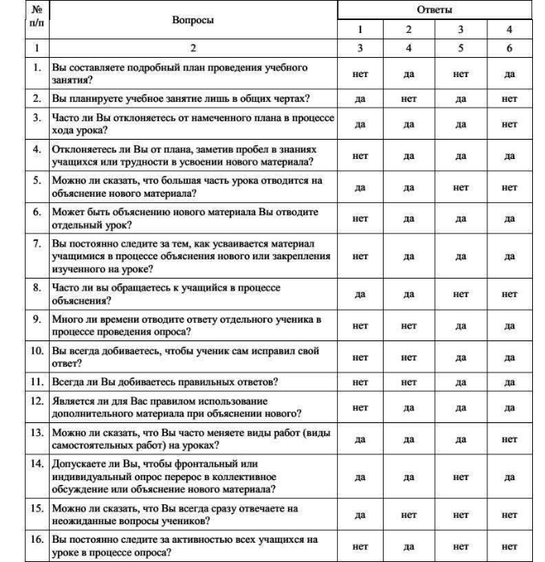
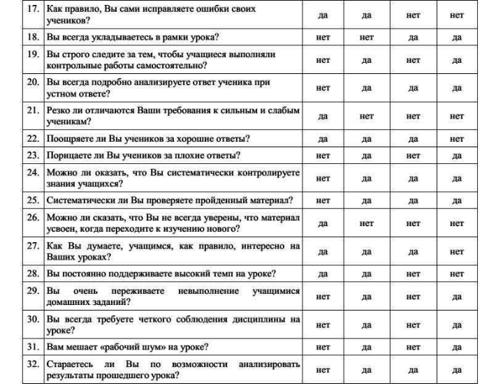
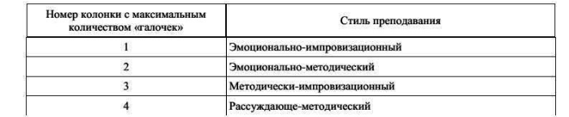

Тест «Стиль преподавания»
Анализ ответов на нижеследующих вопросы поможет Вам выявить основные достоинства и недостатки стиля Вашего преподавания
Алгоритм действий при ответах на вопросы:
1. Внимательно прочтите все предложенные Вам вопросы.
2. Обратите внимание на ответы в колонках 1–4. Вы заметили, что варианты ответов совпадают? Например, на первый из вопросов ответ «нет» в первой к третьей колонке, ответ «да» – во второй и четвертой.
3. При повторном чтении отмечайте «галочками» свое отношение к вопросу, используя колонки 1–4. Причем необходимо отметить все «да» или все «нет» в строке, предполагающей ответы на вопрос. Например, при ответе «нет» на первый из вопросов «галочками» должны быть отмечены ответы в колонках №1 и № 3.
Пожалуйста, приступайте к ответам на вопросы, соблюдая требуемый алгоритм действий.


Ответив на все вопросы, подсчитайте количество «галочек» в каждой колонке. Подчеркните ту из них, где количество «галочек» максимально.
Используя таблицу 1, определите, к какому стилю преподавания можно отнести Вашу профессиональную деятельность. Безусловно, это приблизительные результаты. Однако наши советы могут помочь Вам выбрать тему самообразования.
Таблица 1

В зависимости от выделенного стиля преподавания предлагаем Вам следующие примерные рекомендации. На их основе Вы можете составить индивидуальный план работы по совершенствованию своего стиля преподавания.
Эмоционально-импровизационный стиль. Вы обладаете многими достоинствами: высоким уровнем знаний, артистизмом, контактностью, проницательностью, умением интересно преподать учебный материал, умением увлечь школьников преподаваемым предметом, навыком руководства коллективной работой. Ваши уроки отличает благоприятный коммуникативный климат, разнообразие методов.
Однако Вашу профессиональную деятельность характеризуют и определенные недостатки: отсутствует система закрепления и повторения учебного материала, недостаточен контроль за знаниями учащихся, особенно за знаниями, умениями и навыками слабых учеников. Несколько завышена Ваша самооценка. Повышенная чувствительность обуславливает зависимость Вашего поведения от ситуации на уроке.
В результате у Ваших учеников стойкий интерес к изучаемому предмету и высокая познавательная активность сочетаются с непрочными знаниями, недостаточно сформированными навыками самообразования.
Рекомендуем Вам уменьшить количество времени, отводимого на объяснение нового материала, а в процессе объяснения обращать самое серьезное внимание на приемы, способствующие выявлению уровня и качества усвоения понятий и учебных действий. Необходимо регулярно контролировать осознанность усвоения. Для этого можно систематически давать учащимся небольшие проверочные работы, организовать взаимоконтроль, а в старших классах ввести систему зачетов.
Внимательно относитесь к уровню знаний слабых учеников. Продумайте для них индивидуальную программу, учитывающую формирование приемов учения.
Не избегайте «скучной» работы – отработки правил, повторения, проверки письменных работ учащиеся. Смелее включайте учащиеся в подготовку, организацию и проведение учебных занятий, взаимопроверку письменных домашних работ. Старайтесь активизировать внимание учащихся к предмету не внешней развлекательностью, а его мировоззренческой сущностью и взаимосвязями с другими предметами.
Больше внимания уделяйте индивидуальному опросу учащихся, добиваясь верных и полных ответов. Никогда не исправляйте ошибку, прерывая ученика правильными пояснениями, помогите ему наводящими вопросами или контрпримерами. Повышайте требовательность к выполнению самостоятельных работ учащимися.
Старайтесь, планируя урок, предусмотреть учебную деятельность каждого ученика, анализируйте проведенный урок, мысленно отмечая его сильные и слабые стороны.
Эмоционально-методический стиль. Вашу профессиональную деятельность отличают многие достоинства: высокий уровень знаний, контактность, проницательность, высокая методичность, требовательность, умение интересно преподать учебный материал, умение активизировать учеников, возбудив у них интерес к особенностям самого предмета, умение использовать и варьировать различные формы, методы, средства обучения.
В результате у Ваших учеников прочные знания сочетается с высокой активностью и сформированными навыками учения.
Однако Вам свойственны и некоторые недостатки: несколько завышена самооценка. Ваше настроение зависит от ситуации на уроке, подготовленности отдельных учащихся к уроку и от их дисциплины.
Рекомендуем Вам не раздражаться на уроках, набраться терпения и, если необходимо, несколько раз объяснить материал, который учащимися не понят. Не исправляйте сразу неверных ответов, постарайтесь наводящими вопросами добиваться верных ответов. Изучите приемы варьирования, позволяющие каждый раз по-новому объяснять один и тот же материал, контролировать одни и те же умения учащихся. Может быть, Вам следует изучить методику опроса В. Шаталова, А. А. Окунева. Не знакомы ли Вы с формами организации учебных занятий, разработанными И. М. Передовым?
Методически-импровизационный стиль. Ваша профессиональная деятельность обладает многими достоинствами. Вас отличает высокий уровень знаний, контактность, проницательность, высокая методическая культура, требовательность к себе и учащимся, внимательное отношение к уровню знаний всех учащихся, объективная .самооценка, сдержанность.
У Ваших учащихся интерес к изучаемому предмету сочетается с прочными знаниями и сформированными навыками учения.
Однако Ваша система имеет резервы: необходимо смелее варьировать формы и методы обучения, изучать опыт коллег, которые не затягивают опрос и у которых более высокий темп урока не снижает его результативности.
Может быть, Вам следует познакомиться с работой А. А. Окунева «Спасибо за урок, дети!» (М., 1988)? Знаете ли Вы содержание монографии И. М. Чередова «Формы учебной работы в средней школе» (М., 1988)?
Рассуждающе-методический стиль. Вашу профессиональную деятельность отличают многие достоинства: высокая методическая культура, внимательное отношение к уровню знаний всех учеников, высокая требовательность к учащимся.
Однако Вашу деятельность характеризуют и определенные недостатки: неумение постоянно поддерживать интерес учащихся к своему предмету, использование одних и тех же методов и форм обучения, предпочтение репродуктивной деятельности учащихся продуктивной, творческой, самостоятельной деятельности.
В результате у Ваших учеников сформированные навыки учения и прочные знания сочетается с отсутствием интереса к изучаемому предмету. Пребывание на Ваших уроках для многих учащихся утомительно и неинтересно.
Рекомендуем Вам шире использовать прием поощрения учащихся за удачные ответы, поиск решений, даже если он и не ведет к верному результату. От эмоционального состояния Ваших учеников в конечном счете зависит и результативность Вашей системы.
Постарайтесь расширить свой арсенал методических приемов, варьировать структуры уроков, формы и методы обучен.
ТЕСТ «СТИЛЬ ПРЕПОДАВАНИЯ»
1. нет да нет да
2. да нет да нет
3. да да да нет
4. нет да да да
5. да да нет нет
6. нет да да да
7. нет да да да
8. да да нет нет
9. нет нет да да
10. нет нет да да
11. нет нет да да
12. нет да да да
13. да да да нет
14. да да нет да
15. да нет нет нет
16. нет да нет нет
17. да да нет нет
18. нет нет да да
19. нет да нет да
20. нет да да да
21. да нет нет нет
22. да да да нет
23. нет да нет да
24. нет да да да
25. нет да да да
26. да нет нет нет
27. да да да нет
28. да да нет нет
29. нет да нет да
30. нет да нет да
31. нет да нет да
32. нет да да да
3 19 3 1